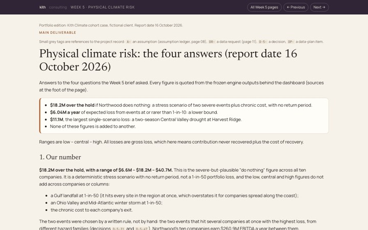
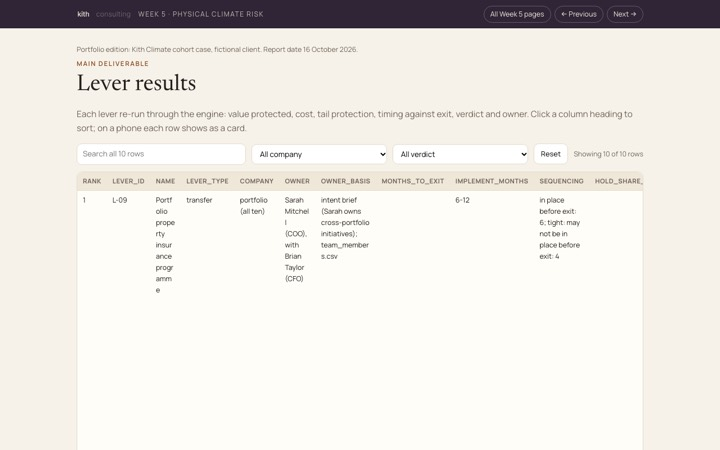

Week 5 of 6, Climate Work Residency
Physical climate risk
What could hurricanes, floods, drought, heat and storms cost Northwood's ten companies before each exit, and what should Northwood do about it?
Highlights

Dashboard
Seven scenarios a reader can step through, from the event to the dollars and the buyer's years, with case and insurance switches.
Open (opens in a new tab)
The four answers
Our number and its range, what Northwood does next, our weakest assumption and the data we would ask for first, in a few pages.
Open (opens in a new tab)
Lever results
Each possible action re-run through the engine, with value protected, cost, timing against exit and a verdict.
Open (opens in a new tab)The case
Northwood needed a defensible number for physical climate risk before each exit. I built a register of 223 dependencies across all ten companies, a scenario engine and a dashboard where a reader can step from an event to what a buyer would see.
The answer is three ranges that are never added together: $18.2M if Northwood does nothing over the hold (a stress scenario), $6.04M a year of expected loss (likely understated) and $11.1M for the largest single scenario. The weakest assumption is the insurance programme, so the first ask is each company's insurance schedule. Gross loss does not depend on it; who pays does.
All deliverables
Each opens in a new tab, in the Kith Climate style it was delivered in. Some pages open with a key to small grey record tags (A- for an assumption, DR- for a data request, D-5- for a decision); they let a reader trace each statement to the project record.
- Week 5 portal (opens in a new tab)The entry page: headline ranges and all twelve pages.
- Dashboard (opens in a new tab)3.6 MBThe interactive answer: map, seven scenarios, insurance and exit-timing switches, and every figure's working.
- The four answers (opens in a new tab)The four questions the brief asked, answered with the ranges.
- Method note (opens in a new tab)How every figure is built, from hazard to exposure to vulnerability to cost, and the limits.
- Re-run note (opens in a new tab)How an analyst at Northwood updates the analysis with no Kith access.
- Vulnerability register (opens in a new tab)One row per dependency, 223 rows, searchable and sortable.
Show all 13
- Scenario outputs (opens in a new tab)Every preset figure by company, channel and layer, with sources.
- Lever results (opens in a new tab)Each lever with value protected, cost, tail protection, timing and verdict.
- Assumption ledger (opens in a new tab)Every assumption with its basis, how it was tested and its status.
- Sensitivity (opens in a new tab)The widest assumptions moved end to end, one at a time.
- Reference data index (opens in a new tab)Every input the build reads, tagged seeded, fetched, synthesised or assumed.
- Data requests (opens in a new tab)Each gap filled for now by a synthesised or assumed input, with who holds the answer.
- Week 6 hand-off (opens in a new tab)The historical hand-off note to the disclosure work.
Data and method
The method notes, data and re-run steps that let the client reproduce the work without us.
- Method note (markdown) (opens in a new tab)Markdown fileThe method note as a plain text file.
- Re-run note (markdown) (opens in a new tab)Markdown fileUpdate steps, script order and checks.
- Four answers (markdown) (opens in a new tab)Markdown fileThe four answers as a plain text file.
- Vulnerability register (opens in a new tab)CSVAll 223 rows as data.
- Scenario outputs (opens in a new tab)CSVEvery preset figure as data.
- Lever results (opens in a new tab)CSVLever results as data.
Show all 14
- Assumption ledger (opens in a new tab)CSVThe assumptions as data.
- Sensitivity (opens in a new tab)CSVThe sensitivity runs as data.
- Reference data index (opens in a new tab)CSVInputs with size and checksum.
- Data requests (markdown) (opens in a new tab)Markdown fileThe gap list as a plain text file.
- Hand-off notes (markdown) (opens in a new tab)Markdown fileThe Week 6 hand-off as a plain text file.
- Scenario grid, hazard (opens in a new tab)JSON, 1.2 MBThe precomputed grid behind the dashboard's builder.
- Scenario grid, dependency (opens in a new tab)JSON, 1.0 MBThe dependency-level grid behind the builder.
- Delivery lineage (opens in a new tab)CSVWhich source file each delivered page came from.
How it was built
- The register has one row per site or supplier dependency, 223 rows for ten companies. Own sites are placed from the coordinates in the data room (the case's set of company files) (138 of 139; one office has only a city).
- The engine is a bottom-up stress model, not a catastrophe model. Hazard frequencies come from public FEMA data and flood damage from published depth-damage curves. Every result is low, central and high, and gross of insurance; insurance is shown separately.
- The data room had no insurance schedules, so the insurance programme is synthesised by stated rules and flagged as the weakest assumption. Assumptions are listed in a ledger with a data request to close each gap.
- I replayed nine events the companies reported, with severity fixed beforehand. The first run passed five of nine; two assumptions were narrowed, two events could not be tested, and the final run passed all seven tested. This is in-sample and the pages say so.
- Independent check scripts and a clean-folder re-run sit behind the build. Before publishing, a further check script passed 101 of 101 checks on the dashboard's figures, and three deliberately changed inputs (for example the buyer's years) were all detected. At the cohort's gate review, 14 of 14 presentation findings were fixed; the portfolio edition then had two further review rounds.
My part
- I challenged the builder's claim that the 138 coordinates were only city-level; the course slides said otherwise. I reversed the call, and 13 conflicts between company statements and flood maps became findings.
- I set the scope to all ten companies, asked for a scenario builder alongside pre-set scenarios, and ruled that upside and downside are shown gross and never netted.
- I decided which hazards to include (adding convective storms) and which switches the builder needed.
- For this portfolio, I had the expected loss restated as a lower bound (likely understated) and the $18.2M as a stress scenario, not a probability.
The AI's part
- Claude built the register, the scenario engine, the dashboard and the twelve pages.
- Claude synthesised the insurance programme and the other missing inputs, and listed each as an assumption or data request.
- Claude wrote the independent check scripts and ran the reviewers.
- Claude's own wrong premise about the coordinates and some claims it added itself (for example that each step was checked before the next) were caught in review and corrected.
Across the engagement
From Week 4. Week 4's exit timing and hold years per company set the periods over which Week 5 adds up loss. Week 5 covers physical hazards only; Week 4's $13.5M a year covers all exposure lines including customer what-ifs, so the two headlines are not comparable.
Into Week 6. Week 6 took the expected loss over the hold ($12.6M, range $4.0M to $26.8M) into the LP (investor) climate report and the board pages. The $18.2M stress scenario is a different measure and is not used there.